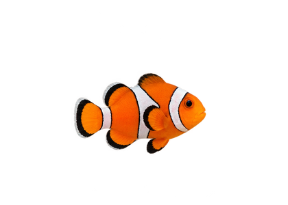
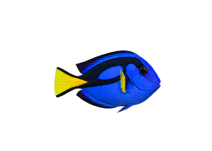
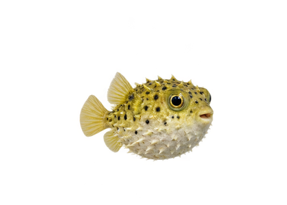
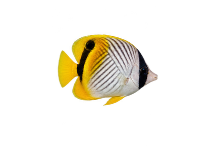
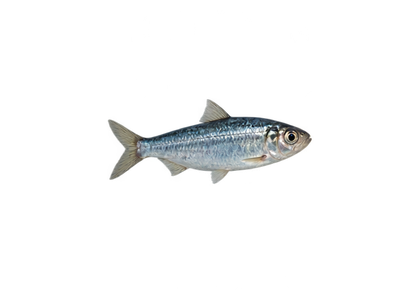
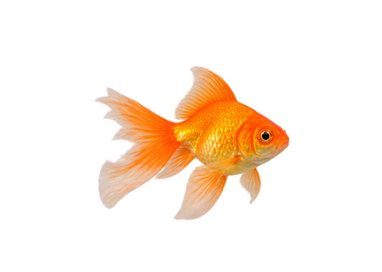

Jelajahi akuarium
Lihat ikan yang sedang berenang dan pilih tema air yang kamu sukai.
Rawat ikan virtual, beri mereka makan, ubah suasana akuarium, dan nikmati ketenangan lautan langsung dari browser.






Ikuti tiga langkah ini untuk mulai merawat akuarium virtualmu.
Lihat ikan yang sedang berenang dan pilih tema air yang kamu sukai.
Gunakan tombol Beri Makan, Bersihkan Air, dan Buat Gelembung untuk menjaga kondisi ikan.
Beli ikan di Toko Akuarium, lalu tekan Masukkan pada Inventaris untuk melepasnya ke akuarium.
Interaksi sederhana, suasana yang menenangkan.
Koin, toko ikan, misi, dan progres tersimpan otomatis di browser ini.
💾 Progres game tersimpan otomatis di browser/perangkat ini. Gunakan tombol “Tata Dekorasi” untuk menggeser ornamen di dalam akuarium.
Personalisasi akuarium sesuai suasana hatimu.
Pilih ikan favorit untuk melihat detailnya.
Periksa indikator virtual untuk menjaga suasana akuariummu tetap nyaman.
Virtual Aquarium ini dibuat oleh Rahmat. Terima kasih sudah mampir dan menjelajahi dunia bawah laut virtual ini!